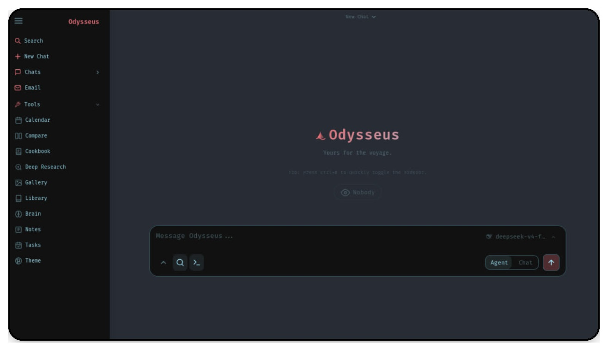

Self-hosted AI workspace，覆盖 chat、agents、research、documents、email、notes、calendar 和 local model workflows。
默认走 docker compose；README 明确提供 quick start、setup guide、roadmap 和 contributing。
本地/API 模型、工具、MCP、文件、shell、skills、memory。
多步骤 web research，支持 source reading 和 report generation。
文档编辑、邮件收件箱、笔记、任务与日历统一在同一界面。
把 AI 交互从“单点聊天”变成“完整生产系统”。
数据与模型更可控，适合私有工作流。
工具、知识、文档、邮件和日程放在一个界面里。
支持 local model workflows、MCP、skills 和 presets。
| 维度 | 判断 | 备注 |
|---|---|---|
| 定位 | AI 工作台 | 不是单一聊天应用 |
| 部署 | 可自托管 | 适合本地/私有环境 |
| 技术栈 | Python | 主语言公开可见 |
| 协议 | AGPL-3.0 | 分发与改造要注意协议义务 |